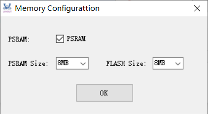
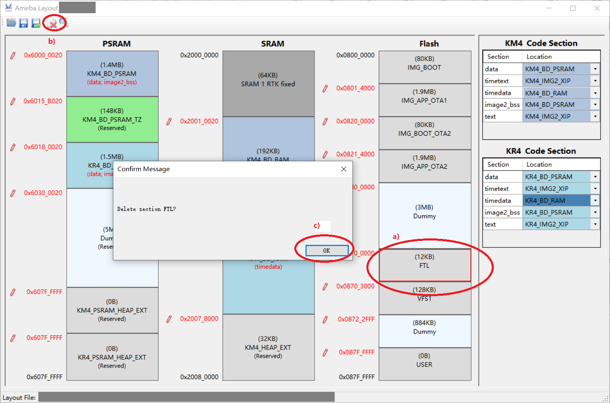

Introduction
The Layout Tool is the official layout adjustment tool developed by Realtek for Ameba series SoC, used to adjust chip memory layout and configure link script files.
As shown below, the UI of Layout Tool contains two parts: the memory layout and the link configuration.
{kind=link}
UI of Layout Tool
Environment Setup
Software Setup
Environment requirements: EX. WinXP, Win 7 or later, Microsoft .NET Framework 4.0.
Software location:
<SDK>/tools/Ameba/LayoutTool/AmebaLayoutTool.exe
Open
Select SDK Path
The SDK select steps are illustrated below:
Click the
Openbutton.Click the
Browsebutton to select the SDK path.The following paths are supported:
{SDK}{SDK}\amebadplus_gcc_project
Click the
OKbutton to confirm the selection.
Configure Memory
Select PSRAM.
PSRAM size: 4MB/8MB/16MB/32MB, default is 8MB.
FLASH size: 4MB/8MB/16MB/32MB/64MB, default is 8MB.
Click the
OKbutton to confirm selection.
{kind=link}
Edit
Configure Link
Link configuration is to adjust the location of code section. The adjustment steps are illustrated below:
Click the value of the
Locationcolumn which needs to be edited.Click the drop-down box to switch the location.
The memory layout will be changed accordingly when code section is moved.
{kind=link}
Note
Location value containing IMG2_XIP means Flash virtual address.
In order to adjust the memory address conveniently, the memory layout shows Flash physical address.
Resize Memory Section
Memory layout contains PSARM, SRAM, and Flash. Every memory consists of several memory sections. The structure of memory section is illustrated below:
Start address: value in red means can be adjusted.
Size: in MB/KB/B.
Memory section name: name of memory section.
Code section: value in red means code section can be moved,
Reservedmeans this section did not contain code section.
{kind=link}
The steps of adjusting start address are:
Click the start address value.
Enter the required address in keyboard.
Note
If not
Dummysection, range of start address: pre-section start address (not contained) ~ current section end address (not contained).If
Dummysection, range of start address: pre-section start address (not contained) ~ current section end address (contained).
Press
Enterto enable it, size will be changed accordingly.
Delete Section
There are two ways to delete a memory section:
Use
Deletebutton in tool stripClick the section, the border will turn red to indicate selected.
Chick the
Deletebutton.Click the
OKbutton to confirm deletion.
 Use right mouse button
Right-click on the section.
Select
Delete.Click the
OKbutton to confirm deletion.
{kind=link}
When memory section is deleted, its name turns Dummy, and its color changes to light blue. In the case its space can be allocated freely.
Preview
Click the
Previewbutton to preview the link scripts.Use
Corecombo-box to preview different core’s link script.
Save and Save As
Save
Click the Save button to save layout file and link script files.
Save As
Click the
Save Asbutton in menu bar.Click the
Browsebutton to edit the file name.Click the
OKbutton.
Note
Path of the layout file and link script file cannot be changed, which can only be allowed to be saved as another files.
{kind=link}